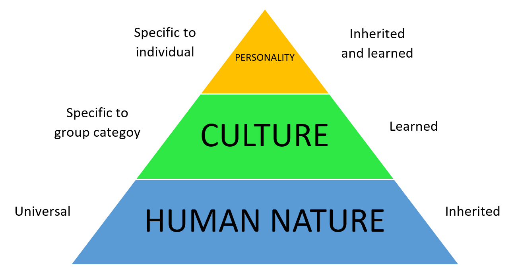

# Non-Violent Communication ## ... and Cultural Context [Jacqueline Weiner](mailto:j.weiner@esciencecenter.nl), [Ole Mussmann](mailto:o.mussmann@esciencecenter.nl)
Non-Violent Communication (NVC) Primer
## NVC 101 Conflict resolution, and - increase empathy, - reduce miscommunication, and - discourage coercive or manipulative language in four easy steps. <!-- .element: class="fragment" -->
## 1. Observation 🧐 - State facts - Stick to specific situations - Avoid judgment or blame (undisputable) <span class="fragment" data-fragment-index="1"><span class="fragment strike" data-fragment-index="2">"You are always late!"</span> <span class="fragment" data-fragment-index="2">(not true, also not helpful)</span> <p class="fragment">"I see that Wednesday's submission deadline was missed."</p>
## 2. Feeling ❤️ - State how you feel - Be careful to avoid - Accusations _"I feel bullied"_ - Thoughts _"I feel I didn't get a fair deal"_ - Evaluations _"I feel unimportant"_ - Actions by others _"I feel ignored"_ (undisputable) <span class="fragment strike" data-fragment-index="1">"I feel insulted."</span> <span class="fragment" data-fragment-index="1">(not a feeling, assumes a perpetrator)</span> <p class="fragment">"I'm scared that our paper will be rejected."</p> <footer> N.B.: The English verb "to feel" describes more than feelings. </footer>
## 3. Needs 🙋♂️ - Focus on yourself - Give context, if necessary (undisputable) <span class="fragment strike" data-fragment-index="1">"I need you to be more punctual."</span> <span class="fragment" data-fragment-index="1">(a demand, not a need)</span> <p class="fragment">"I need that paper to be accepted, so I have a chance of getting a promotion."</p>
## 4. Requests 🙏 - Not a demand - Allow "no" for an answer - Understand the reason and empathize <span class="fragment strike" data-fragment-index="1">"Let's figure out how we can prevent this."</span> <span class="fragment" data-fragment-index="1">(friendly language, but it's a demand, not a request)</span> <p class="fragment">"Can we discuss what happened and how to prevent it in the future?"</p>
Intermezzo
Cultural Context
## Theory of Mind Astray - We often _think_ that we know how others work - This assumption is based on our own experiences - Especially across cultures, this assumption might not hold 
## Examples of Mismatch - Explicit vs. implicit - Reactive vs. proactive - Harmony vs. Criticism - Elaborate vs. Succinct - Joint vs. personal responsibility - Pace, are pauses to be filled?
## Your Experiences Have you experienced challenges in commutication due to cultural differences? How did you overcome those?
# NVC Excercise